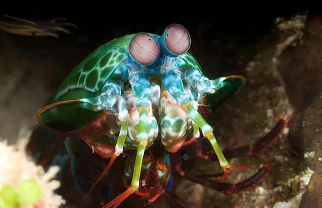
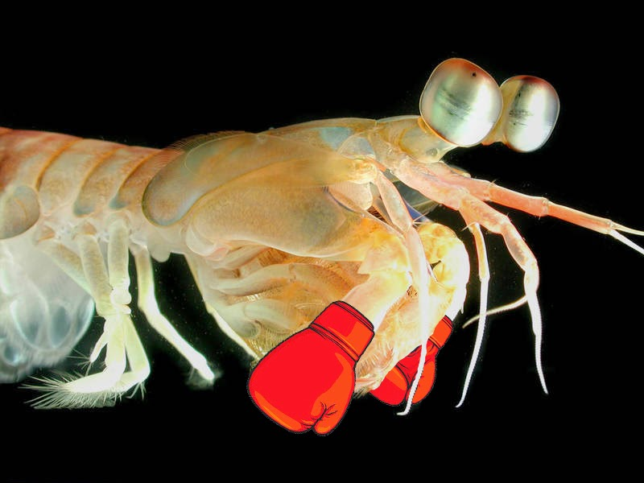

Fatos sobre o Stomatopoda
Informações gerais
O Stomatopoda (Odontodactylus scyllarus) também é chamado popularmente de tamarutaca ou de lacraia-do-mar. É uma ordem de crustáceos marinhos.

| Reino | Filo | Subfilo | Classe | Subclasse | Ordem |
|---|---|---|---|---|---|
| Animalia | Arthropoda | Crustacea | Malacostraca | Hoplocarida | Stomatopoda |
Visão
Esses animais têm visão apurada, capazes de enxergar no espectro infravermelho e ultravioleta. Seus olhos conseguem enxergar a maior gama de cores do reino animal.
Defesa e Ataque
As maiores esmagadoras, tais como exemplares de Odontodactylus scyllaruse, são capazes de desferir um dos mais rápidos e violentos golpes do reino animal, um soco que pode apresentar a velocidade de um tiro calibre .22 (equivalente a 720km/h) e uma força de impacto de 60 kg/cm². Essa força esmagadora é a responsável pelo seu título de "lagosta-boxeadora" e é capaz de facilmente quebrar a carapaça de um caranguejo, as conchas duras e calcificadas de gastrópodes ou até mesmo quebrar o vidro reforçado de um aquário.
